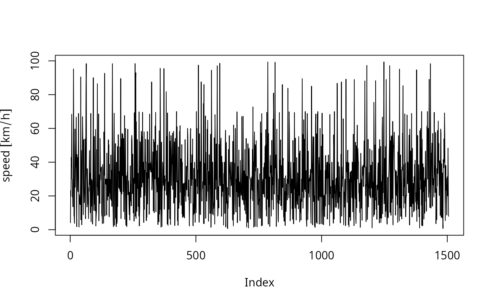

Speed.RdSpeed returns a tranformed object with class "Speed" and units
km/h. This functions includes two arguments, distance and time. Therefore,
it is posibel to change the units of the speed to "m" to "s" for example.
This function returns a dataframe with units for speed. When this function
is applied to numeric vectors it add class "units".
Speed(x, ...) # S3 method for Speed print(x, ...) # S3 method for Speed summary(object, ...) # S3 method for Speed plot(x, ...)
| x | Object with class "data.frame", "matrix" or "numeric" |
|---|---|
| ... | ignored |
| object | Object with class "Speed" |
Constructor for class "Speed" or "units"
{ data(net) data(pc_profile) speed <- Speed(net$ps) class(speed) plot(speed, type = "l") pc_week <- temp_fact(net$ldv+net$hdv, pc_profile) df <- netspeed(pc_week, net$ps, net$ffs, net$capacity, net$lkm) summary(df) }#>#> Speeds by columns and street in study area = #> Min. 1st Qu. Median Mean 3rd Qu. Max. #> 3.929 39.667 40.000 49.142 59.985 100.000